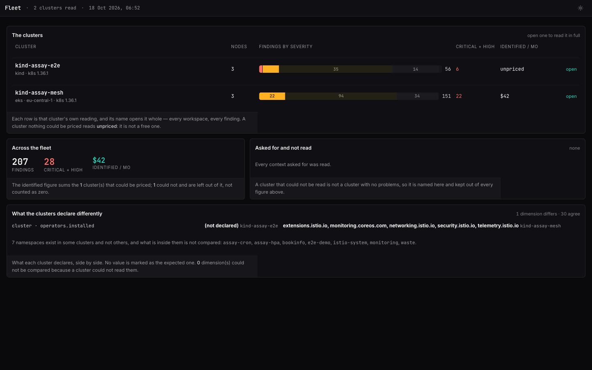

Free
For a first look at any cluster.
$0
no account, nothing to pay
- Preflight: drain, zone, upgrade
- The size of any reading: problems by severity and kind, and what they cost
- The desktop app's live run
Shoalcheck reads your cluster with get and list, from your laptop, in seconds — and tells you which node won't drain, what has nowhere to go if a zone fails, and what blocks the next upgrade. Every claim names the object it rests on.
$ shoalcheck preflight drain assay-e2e-worker ✗ assay-e2e-worker cannot be evacuated: 1 thing stops the drain 1. Drain of assay-e2e-worker is blocked by budget e2e-demo/drain-blocked-pdb · evicting 1 pod covered by the budget is required · disruptionsAllowed=0, maxUnavailable=0, expectedPods=2 · the eviction API would reject it, so `kubectl drain` would not complete basis: 12 kinds read · 16 requests, 0 object writes $ echo $? 2
shoalcheck preflight zone eu-central-1a — exit 2.Illustrative sample: a fictional cluster run through the real engine. The verdict and its reasons are the reading's own.
Each one reads only the kinds it needs and answers with an exit code a pipeline can act on: 0 nothing stops it, 2 something does, 1 the answer is partial and says what was refused.
$ shoalcheck preflight drain assay-e2e-worker2 ✗ assay-e2e-worker2 cannot be evacuated: 1 thing stops the drain 1. Drain of assay-e2e-worker2 is blocked by budget e2e-demo/drain-blocked-pdb · PodDisruptionBudget e2e-demo/drain-blocked-pdb reports disruptionsAllowed=0 · A PodDisruptionBudget constrains only the voluntary eviction path; it gives no protection against this node failing. basis: 12 kind(s) read · 16 request(s), 0 object write(s) exit 2
$ shoalcheck preflight upgrade 1.37 ✓ upgrading to 1.37: nothing this model checks stops it basis: 8 kind(s) read · 12 request(s), 0 object write(s) checks: node-pool-cannot-roll, crd-conversion-webhook-unbacked, api-removals@2026-08-30 this model checks a subset of what the scheduler checks: it can say a change will stop, and it cannot promise one will succeed. exit 0

shoalcheck audit reads reliability, security, cost and topology and writes one self-contained file: every finding with the object it rests on, every dollar with its rate, and what could not be read named as such — never counted as clean. Filter it, slice it, open any finding, hand it off.


Two real readings of our own kind test cluster, two seconds apart, around one deliberate bad deploy: shop/checkout on nginx:latest, one replica, no probes. The second names the twelve findings the first did not have, and each one opens to what it rests on.
A finding that goes missing is counted as missing, never as dealt with: the object may have been deleted, or a rule may not have run. History stays on your machine.
Open the comparisonOur two kind test clusters, read together. Each name opens that cluster's full reading. The totals add only what could be priced — kind-assay-mesh carries made-up cloud labels, so the price table has something to price; kind-assay-e2e is plain kind and says unpriced.
What the clusters declare differently is listed side by side, and no value is marked as the right one. A context that could not be read is named, never counted as a cluster with no problems.
Open the fleet
Pick a cluster, ask a question, read the answer. Home with the three jobs, Preflight over your real nodes and zones, every reading kept and comparable, ⌘K to anything — and it tells you when a new version is out.
The demo is the real window replaying a session recorded against our kind test cluster. Nothing in it talks to a cluster.
Every figure here is measured or a floor, with its basis underneath — never a saving we ask you to take on trust.
kubectl get -o yaml prints them, at 3–4 characters a token. Measured on our two test clusters; the 1,500-pod line uses the same per-object sizes. Scale: 2.5 M tokens across. Past the line, an agent can only read a sample — and an audit of a sample is not an audit.A floor for the agent: no reasoning, no output, nothing read twice — an agent loop re-sends its whole context on every call. Per-object sizes measured on our test clusters (pods 5.4–9.3 KB, everything else about 1 KB). List input prices from platform.claude.com, fetched 2026-10-18.
The audit path issues get and list. A recorder wraps the only transport the binary has and counts every request it makes; the figure you see is that count. Secret and ConfigMap values, environment variables, logs and node shells are never read at all.
What it reads, line by linePriced by the clusters you read in any 30 days — never by node, never by seat. A licence is checked offline.
For a first look at any cluster.
For an engineer with a few clusters.
For a platform team and its pipeline.
For an organisation running many clusters.
A licence is a signed key the binary checks offline — no phoning home. Reading the same cluster again costs nothing, and preflight is never counted.
The command line and the desktop app read the same way and accept the same licence key. Nothing goes into your cluster; the binary needs only the kubeconfig you already use.
Not notarized by Apple yet: the first time, Control-click the app and choose Open.
Not code-signed yet: SmartScreen asks once — More info, then Run anyway. The app opens in your browser.
Static binaries, no system libraries required. The app opens in your browser.
brew install shoalcheck/tap/shoalcheck
macOS and Linux, from the first stable release; release candidates are downloads only.
kubectl shoalcheck preflight drain node-1
Put kubectl-shoalcheck from the release on your PATH; kubectl finds it by its name.
shoalcheck upgrade
The app tells you when a new version is out and installs it after checking its signature; Homebrew and krew copies upgrade through them.
Every release publishes SHA-256 sums, signed with cosign.
No. It is a binary on your machine that talks to the Kubernetes API with your kubeconfig, issuing get and list. There is no agent, operator, CRD or webhook, and nothing to uninstall.
Read access to the kinds it lists — shoalcheck audit --show-permissions prints them before it connects. With less, it still runs, and says which kinds it could not read and why. A refused read is never reported as a clean one.
Nothing about your clusters. The binary talks to your API server and, when one is reachable, to Prometheus. The only other request is the update check — shoalcheck upgrade, or the desktop app once a day if you leave that switch on — which asks github.com for the newest release and carries nothing about a cluster.
Any conformant Kubernetes cluster it can reach. Costs are priced from bundled list prices for EKS, AKS and GKE; on any other cluster a figure says “unpriced” rather than inventing a rate.
A distinct cluster, by its kube-system UID, read with a licence in any 30 days — counted on your machine. Reading the same cluster again costs nothing, and preflight is never counted.
Offline. A key is a signed document naming your plan, its expiry and its cluster cap, and the binary verifies the signature without phoning home. Paste it into the app under Plan & licence, or run shoalcheck licence install.
Preflight in full, and the size of any reading: how many problems, how serious, of what kind, what they would cost, and the five most serious kinds. Which objects, the evidence and the fix for each are what a licence adds. Nothing is saved, written or exported.
The first releases are not yet notarized by Apple or code-signed for Windows. Each release publishes the archives' SHA-256 sums, signed with cosign, so you can check what you downloaded with cosign verify-blob and the public key beside the releases.
Free preflight, no account, nothing installed. Two minutes from download to your first answer.